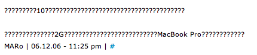
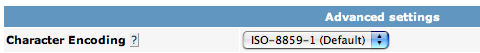

Comments on my site are garbled
This page refers to the legacy Haloscan commenting system. We are working with the folks at JS-Kit to improve their support of international systems.
If you use a non-european language for your site then comments may appear to be "garbled" like this:

To make comments appear correctly:
- Go to your Haloscan Settings.
- Scroll down the page to "Advanced settings."
-
Set the "Character Encoding" to "UTF-8."
